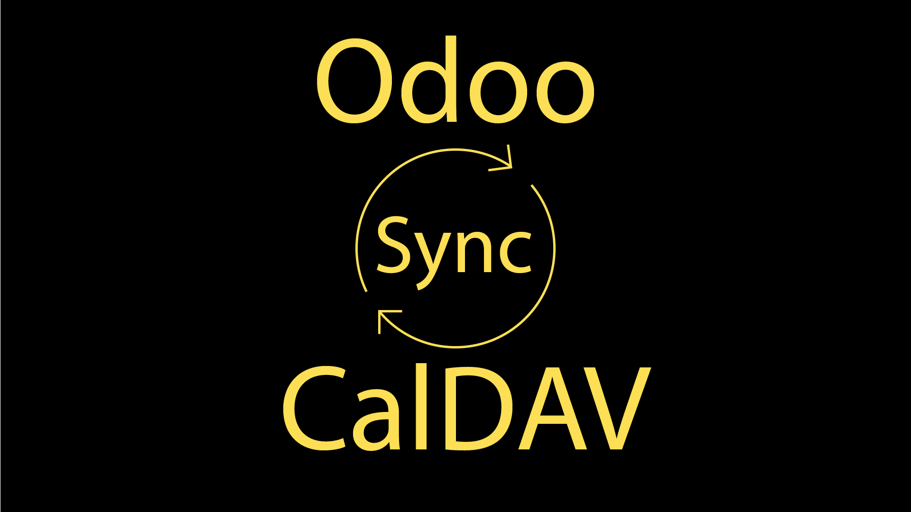

CalDAV Synchronization

Author: Bemade Inc. (Marc Durepos)
Website: www.bemade.org
License: GNU Lesser General Public License (LGPL-3)
Overview
The CalDAV Synchronization module for Odoo allows users to synchronize their calendar events with CalDAV servers. This enables seamless integration of Odoo calendar with external applications like Apple Calendar or Thunderbird.
Features
- Synchronize Odoo calendar events with CalDAV servers.
- Create, update, and delete events in Odoo and reflect changes on the CalDAV server.
- Poll CalDAV server for changes and update Odoo calendar accordingly.
Configuration
- Install the module in Odoo.
- Go to the User settings in Odoo.
- Enter the CalDAV calendar URL, username, and password on the user settings.
Usage
- Create a calendar event in Odoo and it will be synchronized with the CalDAV calendar.
- Update the event in Odoo and the changes will reflect on the CalDAV server.
- Delete the event in Odoo and it will be removed from the CalDAV server.
- Changes made to the calendar on the CalDAV server will be polled and updated in Odoo.
Technical Details
The module extends the calendar.event model to add CalDAV synchronization functionality. It uses the icalendar library to format events and the caldav library to interact with CalDAV servers. Polling for changes on the CalDAV server can be triggered manually by triggering the scheduled action in Odoo.